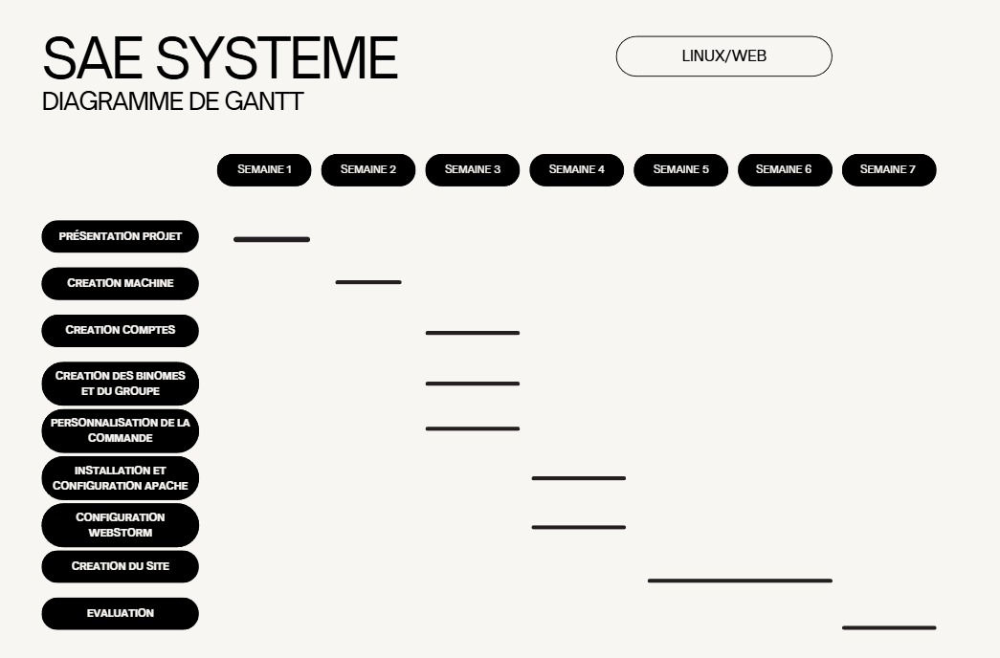

Diagramme de Gantt
Le diagramme de Gantt suivant illustre les étapes clés du projet SAE S1.03 :

Diagramme de Gantt du projet
Ce diagramme montre les tâches principales, leurs durées, et leurs interdépendances.